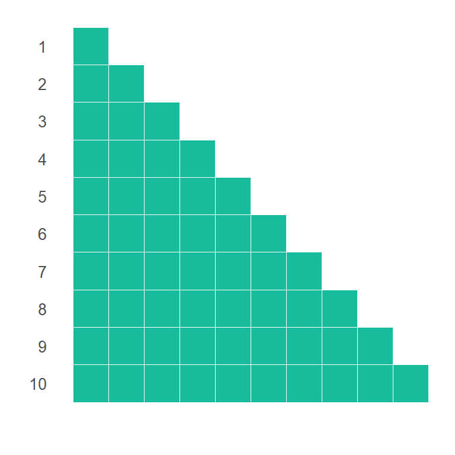
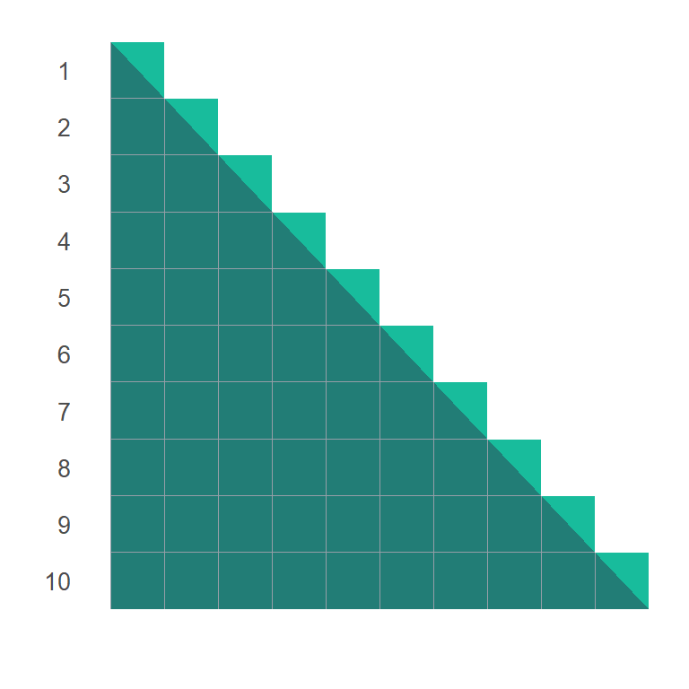
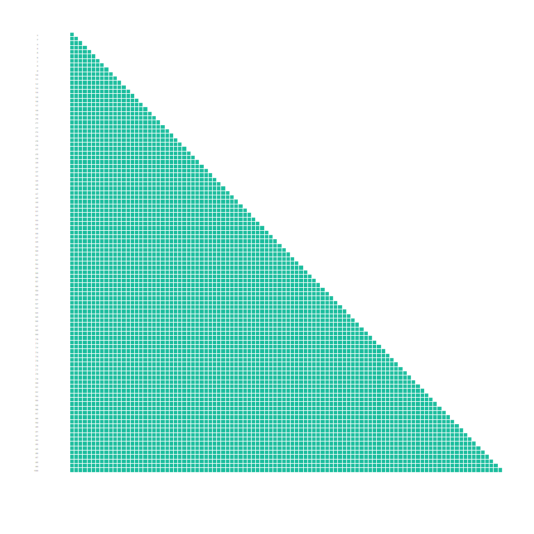
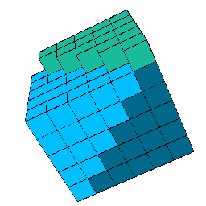
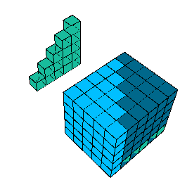
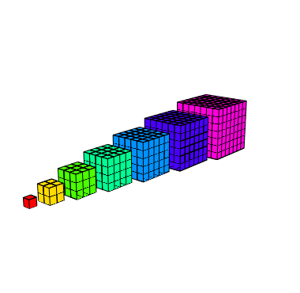
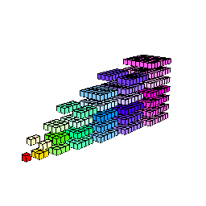

Sumas, sumas y más sumas
Rodrigo Zepeda
1 Dos problemas iniciales
1.1 Un problema de intereses
Una cuenta de ahorro (por ejemplo la del retiro o para cuando metas a tu descendencia a la escuela) funciona más o menos de la siguiente manera: cada día primero de mes depositas una cantidad fija de \(P\) pesos y cada fin de mes el banco te da \(k\) % del dinero que tenías al inicio. Aterrizándolo con números, cada mes depositas \(100\) pesos y el banco te da \(2\)% (\(0.02 \times 100 \%\)) del dinero total que tenías el mes anterior. Por ejemplo: la tabla muestra el dinero que tienes durante el primer año
| Mes | Deposito | Intereses | Saldo |
|---|---|---|---|
| 1 | 100 | 0.000000 | 100.0000 |
| 2 | 100 | 2.000000 | 202.0000 |
| 3 | 100 | 4.040000 | 306.0400 |
| 4 | 100 | 6.120800 | 412.1608 |
| 5 | 100 | 8.243216 | 520.4040 |
¿Pero qué pasa si mi tasa ahora no es del \(2\%\) sino de manera general del \(k \cdot 100 \%\) con \(0 < k < 1\) y estoy depositando no \(1000\) pesos sino \(P\) pesos? ¿Cómo obtener una fórmula de esto?
Intentamos desarrollar los meses de manera general. Para ello denotemos \(S_n\) el saldo al finalizar el mes \(n\): \[\begin{equation}\nonumber \begin{aligned} S_1 & = \underbrace{P}_{\textrm{Depósito inicial}} \\ \\ \\ S_2 & = \underbrace{P}_{\textrm{Nuevo depósito}} + \underbrace{S_1}_{\textrm{Lo que ya tenía}} + \underbrace{k \cdot S_1 }_{\textrm{Intereses}} \\ & = P + (1 + k)S_1 \\ & = P + (1 + k) P \\ \\ \\ S_3 & = \underbrace{P}_{\textrm{Nuevo depósito}} + \underbrace{S_2}_{\textrm{Lo que ya tenía}} + \underbrace{k \cdot S_2 }_{\textrm{Intereses}} \\ & = P + (1 + k)S_2 \\ & = P + (1 + k)\Big[ P + (1 + k) P \Big] \\ & = P + (1 + k)P + (1 + k)^2 P \end{aligned} \end{equation}\] Comprobamos el patrón que estamos viendo a ver si aparece en el mes \(4\): \[\begin{equation}\nonumber \begin{aligned} S_4 & = \underbrace{P}_{\textrm{Nuevo depósito}} + \underbrace{S_3}_{\textrm{Lo que ya tenía}} + \underbrace{k \cdot S_3}_{\textrm{Intereses}} \\ & = P + (1 + k)S_3 \\ & = P + (1 + k)\Big[ P + (1 + k)P + (1 + k)^2 P \Big] \\ & = P + (1 + k) P + (1 + k)^2 P + (1 + k)^3 P \end{aligned} \end{equation}\] Mi hipótesis es que, al mes \(n\), el saldo en la cuenta estará dado por: \[\begin{equation}\nonumber S_n = P + (1 + k) P + (1 + k)^2 P + (1 + k)^3 P + \dots + (1 + k)^{n-2} P + (1 + k)^{n-1} P \end{equation}\]Nota que esto es una sumota y hacerlo a mano va a estar terrible si nuestro ahorro es, por ejemplo, a \(20\) años (i.e. \(240\) meses). Peor problema: dada una tasa \(k = 0.5\) fija, supongamos que nos interesa saber el valor \(P\) que tenemos que depositar cada mes para en \(5\) años (\(60\) meses) tener \(50,000\) pesos. ¿Cómo le hacemos?
Éste es el problema que intentaremos resolver en esta sección de las notas. Para ello introduciremos notación que nos ayudará a manejar sumas así de grandes, veremos varios ejemplos de sumas y finalmente encontraremos un método para calcular rápidamente estas sumas (y de paso más propiedades de estos intereses).
1.2 La suma de los primeros enteros
Antes de intentar resolver la suma de la sección anterior (que fue la que empezó todo esto) empezaremos con una pregunta más sencilla. ¿Cómo se ve la suma de los primeros \(n\) números naturales? Es decir: ¿existirá una fórmula para \(1 + 2 + 3 + \dots + n\)? Cuenta la leyenda (y sólo es una leyenda) que cuando Gauß, (Juan Carlos Federico Gauss o Charley para los cuates) era pequeño su maestro decidió castigarlo diciéndole que sumara los números del \(1\) al \(100\) y el niño obtuvo la fórmula y sumó todos los números rapidísimo ante el asombro del mundo entero.
La forma en la que se encuentra esta fórmula es bastante creativa: comenzamos con enlistar los números del \(1\) hasta el \(n\): \[\begin{equation}\nonumber 1 + 2 + 3 + \dots + (n-2) + (n-1) + n; \end{equation}\] también los enlistamos al revés: \[\begin{equation}\nonumber n + (n-1) + (n-2) + \dots + 3 + 2 + 1. \end{equation}\] Podemos sumar ambos: \[\begin{equation}\nonumber \begin{aligned} & 1 &+& 2 &+& 3 &+ \dots +& (n-2) &+& (n-1) &+& n \\ + \qquad & n &+& (n-1) &+& (n-2) &+ \dots +& 3 &+& 2 &+& 1 \\ \hline & (n+1) & + & (n + 1) & + & (n + 1) & + \dots +& (n + 1) & +&(n + 1) & +&(n + 1). \end{aligned} \end{equation}\] Tenemos entonces la igualdad siguiente: \[\begin{equation}\nonumber (1 + 2 + \dots + n) + (1 + 2 + \dots + n) = n (n+1), \end{equation}\] la cual implica que \[\begin{equation}\nonumber 2 \cdot (1 + 2 + \dots + n) = n (n+1), \end{equation}\] y por tanto: \[\begin{equation}\nonumber (1 + 2 + \dots + n) = \frac{n (n+1)}{2}. \end{equation}\]Esto nos lleva a plantear el teorema siguiente:
Teorema 1 [ Suma de primeros $n$ naturales ]
(-pausa en lo que checas con una calculadora que sí te dé-). Por supuesto que esta fórmula nos ayuda en ejemplos más complicados como el siguiente:
Ejemplo 1 [ Una suma más complicada ]
El ejemplo muestra no sólo que las sumas salen de fórmulas sino que sumas específicas requieren de “trucos”. En este caso el “truco” fue plantear la suma inicial como una suma a la cual se le resta otra y entonces sí aplicar la fórmula que sabemos. Por favor, no intentes memorizarte las fórmulas para las sumas: la única que necesitas memorizar es la geométrica; todas las demás lo importante es aprender el truco no la fórmula. ¡No te pierdas en eso!
2 Cómo escribir una suma
En este caso los \(a_k = (-1)^k\).
En un acto de rebeldía podemos intercambiar \(n\) y \(k\) porque son variables mudas que no afectan el significado de la suma: \[\begin{equation}\nonumber \sum\limits_{n = 1}^{k} n^2 = \underbrace{1^2}_{a_1} + \underbrace{2^2}_{a_2} + \dots + \underbrace{k^2}_{a_k} \end{equation}\]En ese caso las \(a_n\) (nota que son \(a_n\) porque el índice de esta suma es \(n\)) están dadas por \(a_n = n^2\).
Estudiemos algunos ejemplos de sumas nada más por no dejar.
Ejemplo 2
Ejemplo 3
Ejemplo 4
Ejemplo 5
Ejemplo 6
Ejemplo 7 [ Una suma por casos ]
Ejemplo 8 [ Notación para no sumar al que nos cae mal ]
Ejemplo 9 [ Series de potencias 1 ]
Ejemplo 10 [ Polinomios ]
Ejemplo 11 [ Sumas dobles ]
Finalmente, después de haber visto muchas, procederemos a la definición de suma Zogaib (2013):
Definición 1 [ Suma finita ]
o bien: \(\sum a_{i}\). Como a mí jamás me parece obvio quién es la \(i\) no haré eso (pero lo digo porque seguro la vida te pondrá cosas así).
Un último ejemplo de cómo la gente denota las sumas (que no usaremos en esta clase) es con conjuntos. A veces en lugar de usar índices se utilizan los conjuntos de donde salieron los \(a_k\). Por ejemplo en el conjunto \(\mathcal{C} = \{ 1, 2, 3, \dots, 19 \}\) tenemos que \(a_1 = 1\), \(a_2 = 2\), \(a_3 = 3\), etcétera hasta \(a_{19} = 19\). En este caso la notación sería: \[\begin{equation}\nonumber \sum\limits_{a_k \in \mathcal{C}} a_k = 1 + 2 + 3 +\dots + 19. \end{equation}\] Esto es bastante útil cuando no hay una receta para cómo escribir los números. Por ejemplo si \(\mathcal{P}\) es el conjunto de números primos (para los que no existe una fórmula que permita encontrarlos) entonces podemos escribir: \[\begin{equation}\nonumber \sum\limits_{p \in \mathcal{P}} \frac{1}{p} = \frac{1}{2} + \frac{1}{3} + \frac{1}{5} + \frac{1}{7} + \dots. \end{equation}\]3 Técnicas para reducir sumas
En esta sección vamos a intentar deducir formas de obtener fórmulas para sumas interesantes. Como veremos no hay un solo “truco” que salga bien o una técnica única. Mucho de las sumas es de creatividad, de tener la idea. La forma de desarrollar esa creatividad es haciendo muchas sumas así que ¡adelante!
3.1 Sumas como áreas o volúmenes
3.1.1 Suma de los primeros \(n\) enteros
Uno de los trucos más interesantes para una suma es verla desde una perspectiva geométrica como área o volumen. Para poner un ejemplo de lo que quiero decir, considera de nuevo la suma de los primeros \(n\) enteros. \[\begin{equation}\nonumber \sum\limits_{k = 1}^{n} k = 1 + 2 + \dots + n \end{equation}\]La suma de los primeros \(n\) enteros es equivalente al área generada por \(\sum_{k = 1}^{n} k\) cuadrados de longitud \(1\). El chiste de todo es saber cómo acomodar esos cuadrados. Por simplificar la idea, consideremos \(n = 10\) y supongamos queremos calcular la suma \(1 + 2 + \dots + 10\) (que ya sabemos es \(55\) ¿cierto?). Una forma de acomodar los cuadrados para que vayan ad-hoc con la suma es como una pirámide alineada a la izquierda:

Nota que el área de la pirámide es relativamente fácil de calcular pues es un triángulo (pirámide grande) unido a \(10\) triangulitos (ver figura abajo). El triángulo grande mide de base \(10\) y de altura \(10\) por lo que su área es \(10 \times 10 / 2 = 50\) mientras que los pequeños como vienen de cuadrados que miden \(1\) cada uno de ellos mide \(1/2\) y por tanto los \(10\) triangulitos tienen área (conjunta) de \(5\) por lo que el área total de la pirámide es \(55\) y por lo tanto la suma es \(55\).

Este mismo argumento se puede hacer para la suma de \(n\) enteros considerando triángulos más grandes:

La fórmula general será: \[\begin{equation}\nonumber \text{Área del grande} + n \cdot \text{Área de los pequeños} = \frac{n \cdot n}{2} + n \frac{1}{2} = \frac{n(n+1)}{2} \end{equation}\]de donde obtenemos el mismo resultado que ya teníamos pero por otro camino. ¡Genial!
3.1.2 Suma de cuadrados
Para la suma de cuadrados, una opción (presentada por Siu (1984)) es considerar pirámides de cubos unitarios donde el número de cubos en cada piso corresponde con el número de piso cuadrado. Así en el primer piso habrá \(1^2 = 1\) cubo; en el segundo piso, \(2^2 = 4\) cubos; en el tercero, \(3^2 = 9\) cubos y así sucesivamente (ver figura abajo). El volumen de la pirámide debería corresponder con la suma de cuadrados: \[\begin{equation}\nonumber 1^2 + 2^2 + 3^2 + \dots + n^2 = \sum\limits_{k = 1}^{n} k^2. \end{equation}\]

A mí de la pirámide sola no se me ocurre qué hacer (¿a ti sí?); empero, podemos generar 3 pirámides idénticas sólo que rotadas y trasladadas para armar una especie de rompecabezas con ellas:

Notamos que casi forman un cubo; de hecho, podemos pegar las pirámides para generar casi un cubo perfecto (excepto por un lado).

Notamos entonces que el volumen total de tres pirámides es el mismo que el de un prisma cuadrangular de volumen \(n^2 \cdot (n + 1)\) y de una escalera (ver figura abajo). La escalera tiene una característica primordial: su volumen es la suma de los volúmenes de los cubos que la conforman y tenemos \(1\) cubo para su primer piso, \(2\) para el segundo, \(3\) para el tercero por lo cual el volumen de dicha escalera coincide con la suma \(1 + 2 + 3 +\dots + n = \sum_{k=1}^{n} k\) que ya calculamos previamente.

De lo anterior concluimos que: \[\begin{equation}\nonumber \begin{aligned} \textrm{Volumen de tres pirámides } & = \underbrace{n \cdot (n+1)}_{\textrm{Prisma cuadrangular}} + \underbrace{\sum\limits_{k=1}^{n} k}_{\textrm{Escalera}} \\ & = n^2 \cdot (n+1) + \frac{n(n+1)}{2} = n \big( n^2 + \frac{3}{2}n + \frac{1}{2} \big) = \frac{n}{2} (2n + 1) \cdot (n + 1), \end{aligned} \end{equation}\] de donde se sigue que: \[\begin{equation}\nonumber \sum\limits_{k=1}^{n} k^2 = \textrm{Volumen de una pirámide} = \frac{n \cdot (2n + 1) \cdot (n + 1)}{6} . \end{equation}\]Este proceso puede generalizarse a cualquier \(n\).
3.1.3 Suma de cubos
La suma de los primeros \(n\) cubos es más fácil de ver geométricamente que la de los cuadrados. Evaluaremos la suma: \[\begin{equation}\nonumber \sum\limits_{i=1}^{n} i^3 \end{equation}\]Para ello consideramos los cubos literalmente como cubos geométricos formados (a su vez) por cubos unitarios. De esta forma la suma \(1 + 2^3 + 3^3 + 4^3 + \dots + n^3\) la podemos interpretar como la suma de los volúmenes de cubos de lado respectivo \(1,2,3,4,\) etcétera. Esto lo podemos representar en la siguiente figura:

El truco consiste en advertir que dichos cubos los podemos partir en capas

Y de nuevo armarlos como rompecabezas en un cuadrado gigante de longitud \(1 + 2 + 3 + \dots + n\):

3.2 Sumas telescópicas
Las sumas telescópicas son sumas particulares que la gente encontró se resuelven fácilmente. Por poner un ejemplo (súuuper falso) consideremos la suma: \[\begin{equation}\nonumber \sum\limits_{n = 1}^{3606201} \sqrt{n + 1} - \sqrt{n} \end{equation}\] Observamos que si expandimos los primeros términos tenemos algo del estilo: \[\begin{equation}\nonumber \sum\limits_{n = 1}^{3606200} \sqrt{n + 1} - \sqrt{n} = \Big( \sqrt{2} - \sqrt{1} \Big) + \Big( \sqrt{3} - \sqrt{2} \Big) + \Big( \sqrt{4} - \sqrt{3} \Big) + \dots + \Big( \sqrt{3606201} - \sqrt{3606200} \Big) \end{equation}\] (-Pausa en lo que encuentras el patrón-). Observa que la mayor parte de los términos se acaban anulando en el siguiente sumando (primero están sumando y luego restando). Los únicos que no se anulan son \(-\sqrt{1}\) y \(\sqrt{3606201}\) por lo que tenemos: \[\begin{equation}\nonumber \sum\limits_{n = 1}^{3606200} \sqrt{n + 1} - \sqrt{n} = \sqrt{3606201} - \sqrt{1} = 1898. \end{equation}\]Otro ejemplo de una suma que se resuelve de esta manera es la siguiente:
Ejemplo 12
El poder de las series telescópicas no debe ser subestimado. Por ejemplo, apoyándonos en ellas podemos probar el siguiente teorema:
Teorema 2 [ Identidad trigonométrica de Lagrange ]
Como dato curioso (adicional) de acuerdo con Neto (2017) el nombre de sumas telescópicas se debe a que de la misma manera en que un telescopio acorta la distancia entre los orbes celestes y nuestros ojos, la suma telescópica reduce la distancia entre ciertas sumas y sus resultados (haciendo que sumemos menos).
Las sumas telescópicas son súper poderosas. Muchas veces podemos transformar una suma que no es nada obvio que es telescópica en una telescópica [telescopiquear(?)] como muestra el siguiente ejemplo:
Ejemplo 13 [ Telescopiqueando sumas ]
La moraleja del ejemplo anterior es que hay muchas sumas que son telescópicas “escondidas” y que la forma de verlo es “a ojo de buen cubero”.
3.3 Sumas geométricas
Llegamos entonces al siguiente teorema:
Teorema 3 [ Suma geométrica ]
siempre y cuando la depreciación del coche sea menor al \(100\%\) (i.e. \(s = 1\)).
Ejemplo 14
Muchas veces el que algo sea una suma geométrica no es tan obvio y se requieren manipulaciones algebraicas para descubrirla como es el caso de la siguiente suma:
Ejemplo 15 [ Truco de la derivada ]
[Caso $x = 1$] El primer caso es el más fácil, si $x = 1$ tenemos entonces que la suma es: \begin{equation}\nonumber \sum\limits_{k = 1}^{n} k x^k = \sum\limits_{k = 1}^{n} k 1^k = \sum\limits_{k = 1}^{n} k \end{equation} donde ya sabemos que $\sum\limits_{k = 1}^{n} k = \frac{n(n+1)}{2}$ por lo que el problema ya lo resolvimos.
[Caso $x \neq 1$] Recordamos que $\frac{d}{dx} x^k =k x^{k-1}$ por lo que podemos escribir $k x^k$ como: $k x^k =x \cdot k x^{k-1} = x \cdot \Big(\frac{d}{dx} x^k \Big)$ de donde tenemos que: \begin{equation}\nonumber \begin{aligned} \sum\limits_{k = 1}^{n} k x^k & = \sum\limits_{k = 1}^{n} x \cdot \Big(\frac{d}{dx} x^k \Big) \\ & = \underbrace{x}_{\text{No depende de } k} \cdot \sum\limits_{k = 1}^{n} \Big(\frac{d}{dx} x^k \Big) \\ & = x \cdot \frac{d}{dx} \underbrace{\Big( \sum\limits_{k = 1}^{n} x^k \Big)}_{\text{Geométrica}} \\ & = x \cdot \frac{d}{dx} \Big( \frac{x - x^{n+1}}{1-x} \Big) \\ & = x \cdot \Big( \frac{\big(1 - (n+1)x^n \big)\cdot (1-x) - (-1)\cdot\big(x - x^{n+1} \big) }{(1-x)^2} \Big) \\ & = x \cdot \Big( \frac{1 - (n+1)x^n - x + (n+1)x^{n+1} + x - x^{n+1} }{(1-x)^2} \Big) \\ & = x \cdot \Big( \frac{1 - (n+1)x^n + nx^{n+1}}{(1-x)^2} \Big) \\ & = \frac{x - (n+1)x^{n+1} + nx^{n+2}}{(1-x)^2}. \end{aligned} \end{equation} donde usamos que la derivada de una suma (finita) es la suma de las derivadas. Puedes ver este link si no recuerdas eso.
De todo lo anterior concluimos que: \begin{equation}\nonumber \sum\limits_{k = 1}^{n} k x^k = \begin{cases} \frac{x - (n+1)x^{n+1} + nx^{n+2}}{(1-x)^2} & \text{ si } x \neq 1, \\ \frac{n(n+1)}{2} & \text{ si } x = 1. \end{cases} \end{equation}3.3.1 Solución al problema del interés compuesto
Ahora que somos muy buenos en la evaluación de sumas, recordemos la planteada al inicio: \[\begin{equation}\nonumber S_n = P + (1 + k) P + (1 + k)^2 P + (1 + k)^3 P + \dots + (1 + k)^{n-2} P + (1 + k)^{n-1} P \end{equation}\] Usemos nuestro conocimiento de las \(\Sigma\) para escribirlos de manera más compacta: \[\begin{equation}\nonumber S_n = \sum\limits_{i = 0}^{n-1} P (1 + k)^{i} \end{equation}\] donde podemos sacar la \(P\): \[\begin{equation}\nonumber S_n = P \sum\limits_{i = 0}^{n-1} (1 + k)^{i} \end{equation}\] Notamos que el lado derecho es una suma geométrica: \[\begin{equation}\nonumber S_n = \begin{cases} P \Big( \frac{1 - (1 + k)^{n}}{1 - (1 + k)} \Big) & \textrm{ si } k \neq 0 \\ nP & \textrm{ si } k = 0 \end{cases} \end{equation}\] y por tanto: \[\begin{equation}\nonumber S_n = \begin{cases} P \Big( \frac{(1 + k)^{n}}{k} - \frac{1}{k} \Big) & \textrm{si } k \neq 0 \\ nP & \textrm{ si } k = 0 \end{cases} \end{equation}\] Nota que el resultado que da Wolfram Alpha es incompleto: no nos da el caso si \(k = 0\). Finalmente, sea \(k = 0.05\) y consideremos que nos interesa ver cuánto \(P\) debemos depositar de manera mensual en un periodo para en \(60\) meses tener \(50000\) pesos. Para ello sustituimos en : \[\begin{equation}\nonumber \begin{aligned} & 50000 && = P \Big( \frac{(1 + 0.05)^{60}}{0.05} - \frac{1}{0.05} \Big) \\ \\ \Rightarrow & P && = \frac{50000}{\Big( \frac{(1 + 0.05)^{60}}{0.05} - \frac{1}{0.05} \Big)} \approx 141.41 \end{aligned} \end{equation}\]3.4 Sumas aritméticas
Las sumas aritméticas pueden (de inicio) parecer poco útiles; empero veremos (ejemplos más adelante) que de hecho son bastante buenas. Una suma aritmética de primer orden es aquella donde la diferencia entre los sumandos es siempre la misma constante. Por poner un ejemplo considera la suma (que va sumando \(5\) cada vez): \[\begin{equation}\nonumber 7 + 12 + 17 + 22 + 27 + 32 + \dots + 5552 \end{equation}\] Notamos que los sumandos, \(a_k\) cumplen que \(a_{k+1} - a_k = 5\); es decir, la diferencia entre los sumandos siempre es la misma constante. Denotaremos la diferencia entre los sumandos como: \[\begin{equation}\nonumber \Delta_{k}^{(1)} = a_{k} - a_{k-1} = 5. \end{equation}\] (el \((1)\) quedará claro más adelante cuando veamos sumas aritméticas de orden mayor). La observación importante es el análisis de cómo progresan los sumandos. Notamos que \(a_1 = 7\) y de ahí \(a_2 = a_1 + 5\) mientras que \(a_3 = a_2 + 5 = a_1 + 2 \cdot 5\), por otro lado, \(a_4 = a_3 + 5 = a_1 + 3 \cdot 5\); en general el \(k\)-ésimo sumando lo podemos ver como: \[\begin{equation}\nonumber a_k = a_1 + (k-1) \cdot \Delta_{k}^{(1)} \end{equation}\] Usando esto podemos reescribir la suma original como: \[\begin{equation}\nonumber \begin{aligned} \sum\limits_{k = 1}^{n} \Big(a_1 + (k-1) \cdot \Delta_{k}^{(1)} \Big) & = \sum\limits_{k = 1}^{n} a_1 +\Delta_{k}^{(1)} \cdot \sum\limits_{k = 1}^{n} (k-1) \\ & = n \cdot a_1 + \Delta_{k}^{(1)} \cdot \underbrace{\sum\limits_{k = 1}^{n-1} k}_{\text{(verifica)}} \\ & = n \cdot a_1 + \Delta_{k}^{(1)}\cdot \frac{(n-1)n}{2} \\ & = \frac{n}{2} \cdot \Big(2 a_1 + \Delta_{k}^{(1)} \cdot (n-1) \Big) \end{aligned} \end{equation}\] Finalmente, notamos que el término \(a_n\) está dado por: \(a_n = a_1 + (n-1) \Delta_{1}\) y que \(a_1 + a_n = 2a_1 + (n-1)\Delta_{1}\) por lo que podemos sustituir en la fórmula anterior y tener: \[\begin{equation}\nonumber \begin{aligned} \sum\limits_{k = 1}^{n} \Big(a_1 + (k-1) \cdot \Delta_{k}^{(1)} \Big) & = \frac{n}{2} \cdot \Big(2 a_1 + \Delta_{k}^{(1)} \cdot (n-1) \Big) \\ & = \frac{n}{2} \cdot ( a_1 + a_n ) \end{aligned} \end{equation}\] En particular, en nuestro caso \(n = 1110\) (-pausa en lo que compruebas-) \(a_n = 5552\), \(a_1 = 7\) y \(\Delta_{k}^{(1)} = 5\) por lo que: \[\begin{equation}\nonumber 7 + 12 + 17 + 22 + 27 + 32 + \dots + 5552 = \frac{1110}{2} \cdot \Big( 7 + 5552 \Big) = 3085245. \end{equation}\]Ejemplo 16
¡Esta sí es constante! (De hecho la suma es una aritmética de segundo orden; de manera general una suma es aritmética de orden \(j\) si la suma de la \(j\)-ésima diferencia de diferencias es constante). La pregunta entonces es ¿cómo usar que la diferencia de las diferencias es constante para resolver la suma? (-no sé tú, yo saqué una hoja para ponerme a explorar cómo podría hacerse-)
Analizamos los sumandos de la serie (nota que empieza en \(k = 0\)) y vemos cómo se ven las diferencias (renglón de abajo): \[\begin{equation}\nonumber 1, 9, 25, 49, 81, 121, \dots, (2n+1)^2 \end{equation}\] Las diferencias entre términos (las \(\Delta_k^{(1)} = 8k\)), incluyendo el primer término, son: \[\begin{equation}\nonumber 1, 8, 16, 24, 32, 40, \dots, 8n \end{equation}\] Nota que los sumandos de la serie original los podemos escribir en términos de ésta (que es aritmética de primer orden): \[\begin{equation}\nonumber \begin{aligned} 1 & = 1 \\ 9 & = 1 + 8 \\ 25 & = 1 + 8 + 16 \\ 49 & = 1 + 8 + 16 + 24 \\ 81 & = 1 + 8 + 16 + 24 + 32\\ 121 & = 1 + 8 + 16 + 24 + 32 + 40 \\ \vdots & = \ddots \\ (2n+1)^2 & =1 + 8 + 16 + 24 + 32 + 40 + \dots + 8(n-1) \end{aligned} \end{equation}\] O bien escrito con la notación de suma: \[\begin{equation}\nonumber \begin{aligned} 1 & = 1 + \sum\limits_{k=0}^{0} 8k \\ 9 & = 1 + \sum\limits_{k=0}^{1} 8k\\ 25 & = 1 + \sum\limits_{k=0}^{2} 8k \\ 49 & = 1 + \sum\limits_{k=0}^{3} 8k \\ 81 & = 1 + \sum\limits_{k=0}^{4} 8k \\ 121 & = 1 + \sum\limits_{k=0}^{5} 8k \\ \vdots & = \vdots \\ (2n+1)^2 & = 1 + \sum\limits_{k=1}^{n-1} 8k \end{aligned} \end{equation}\] Por lo que podemos ver la suma \(\sum_{k = 1}^{n} (2k+1)^2 = 1 + 9 + 25 + 49 + \dots + (2n+1)^2\) como una suma de sumas (propiamente, una suma doble): \[\begin{equation}\nonumber \begin{aligned} \sum\limits_{k = 0}^{n} (2k+1)^2 & = \sum\limits_{j = 1}^{n} \Big[ 1 + \sum\limits_{k = 0}^{j-1} 8k \Big] \\ & = \sum\limits_{j = 1}^{n} \Big[ 1 + 8 \sum\limits_{k = 0}^{j-1} k \Big] \\ & = \sum\limits_{j = 1}^{n} \Big[ 1 + 4 (j-1) \cdot j \Big] \\ & = \sum\limits_{j = 1}^{n} 1 + 4 \sum\limits_{j = 1}^{n} \Big[ (j-1) \cdot j \Big] \\ & = n + 4 \sum\limits_{j = 1}^{n} \Big[ j^2 - j \Big] \\ & = n + 4 \Bigg[ \sum\limits_{j = 1}^{n} j^2 - \sum\limits_{j = 1}^{n} j\Bigg] \\ & = n + 4 \Bigg[ \frac{n(n+1)(2n+1)}{6} - \frac{n(n+1)}{2}\Bigg] \\ & = n + 4n(n+1) \Bigg[ \frac{(2n+1)}{6} - \frac{1}{2}\Bigg] \\ & = n + 4n(n+1) \Bigg[ \frac{n}{3} + \frac{1}{6} - \frac{3}{6}\Bigg] \\ & = n + 4n(n+1) \Bigg[ \frac{n}{3} - \frac{1}{3}\Bigg] \\ & = n + \frac{4}{3} n(n+1)(n-1) \\ & = n \big[1 + \frac{4}{3}(n+1)(n-1)\big] \\ & = \frac{n(2n + 1)(2n-1)}{3} \\ \end{aligned} \end{equation}\]De donde concluimos el siguiente teorema de la suma de cuadrados de impares:
Teorema 4 [ Suma de cuadrados de los primeros $n$ impares ]
3.5 Usar sumas dobles
Este truco puede parecer una insensatez pues consiste en escribir una suma que no sabemos resolver como dos sumas; empero, el propósito de todo esto es que las dos sumas sean más sencillas y las sepamos resolver. Veamos cómo funciona:
Ejemplo 17 [ Usar doble suma ]
En particular, usar sumas dobles es bastante útil para hacer sumas de enteros elevados a una potencia entera. Es decir, sumas de la forma: \(\sum\limits_{k=1}^{n} k^m\) donde \(m\) es un entero salen con sumas dobles. Veamos un ejemplo:
Ejemplo 18 [ Suma de cuadrados ]
3.6 Reordenar la suma
La idea del ‘truco’ es reescribir la suma de otra forma y ver si a partir de eso podemos resolver. De nuevo tomaremos nuestro ejemplo favorito, la suma de los primeros enteros \(\sum_{k=1}^{n} k\) y veremos cómo se resolvería bajo esta forma.
Ejemplo 19 [ Reescribir la suma ]
- Escribir los primeros y últimos términos de la suma eso siempre ayuda a ver si hay un patrón (como en el ejemplo de sumas telescópicas).
- Revisa las diferencias en la suma (¿cómo se ven los incrementos?)
- Intenta reordenar la suma.
- Si es trigonométrica tener a la mano identidades trigonométricas muchas veces todo se reduce a encontrar ‘la buena’ (como en la identidad de Lagrange)
- Intenta representar la suma de manera geométrica o bien graficar cómo se ve su evolución conforme avanza el número de sumandos
- Intenta reducir la suma a una conocida: una telescópica, una aritmética o una geométrica.
4 Aplicaciones
4.1 Valor presente del flujo de caja
Para esta aplicación primero tenemos que definir unos conceptos:
4.1.1 Interés compuesto
Imagina que tienes \(P\) pesos y recibes, mes con mes, \(i \times 100\%\) de interés (mensual, valga la redundancia) por ellos. ¿Cuánto dinero tendrás después de \(m\) meses? La idea del modelo es simple: \[\begin{equation}\nonumber \begin{aligned} \text{Mes inicial } & P & = P \\\\ \text{Mes } 1 & P + iP & = (1 + i)P \\\\ \text{Mes } 2 & (1 + i)P + i(1 + i)P & = (1 + i)(1 + i) P & = (1 + i)^2 P \\\\ \text{Mes } 3 & (1 + i)^2P + i(1 + i)^2P & = (1 + i)(1 + i)^2 P & = (1 + i)^3 P \\\\ \text{Mes } 4 & (1 + i)^3P + i(1 + i)^3P & = (1 + i)(1 + i)^3 P & = (1 + i)^4 P \\\\ \vdots \\\\ \text{Mes } m & (1 + i)^{m-1} P + i(1 + i)^{m-1}P & = (1 + i)(1 + i)^{m-1} P & = (1 + i)^{m} P \end{aligned} \end{equation}\] Se sigue que la fórmula para la cantidad de dinero para el mes \(m\) está dada por: \(\text{Mes } m = (1 + i)^{m} P\). Por aterrizar esto en un ejemplo, consideremos que tenemos \(\$100\) que invertimos a una tasa de interés del \(5\%\) (por tanto \(i = 0.05\) ¿cierto?) y queremos ver cuánto tendremos en un año (\(12\) meses). Esto lo calcularías como: \[\begin{equation}\nonumber \text{Mes } 12 = (1 + 0.05)^{12} \times 100 \approx 179.59 \end{equation}\]4.1.2 Valor presente
El valor presente representa el valor actual de una cantidad futura de dinero. Por ejemplo, si hoy te doy \(\$10\), el valor presente de ese dinero es \(\$10\) porque los tienes para gastar ahora; empero, si te prometo \(\$10\) en un mes el valor presente de esa promesa no serán \(\$10\) (porque no los tienes) pero tampoco será \(\$0\) (porque \(\$10\) a futuro es mejor que nada). En general, se considera que el valor presente del dinero está dado por \(\text{Valor futuro } (PV) \times \text{Ajuste por un factor de descuento}\) (el factor de descuento es personal y depende de tu utilidad). En general el factor de descuento es una tasa de interés hipotética \(i > 0\) aplicada al valor presente (¿por qué tiene sentido en el modelo que \(i > 0\)?). Para aterrizar esto a un ejemplo, considera una promesa de tener \(\$ 100\) en \(14\) meses y una tasa de interés mensual de \(0.04\). Si esto fuera un modelo de interés compuesto (como en la sección anterior) tendríamos: \[\begin{equation}\nonumber 100 = \text{Mes } 14 = (1 + 0.04)^{14} \times \text{Valor Presente} \end{equation}\] De donde, al realizar un despeje obtendríamos el valor presente: \[\begin{equation}\nonumber \text{Valor Presente} = \frac{100}{(1 + 0.04)^{14}} \approx 57.75 \end{equation}\] De manera general, el valor presente está dado por: \[\begin{equation}\nonumber \text{Valor Presente} = \frac{\text{Valor Futuro}}{(1 + i)^{m}} \end{equation}\]donde \(i\) es la tasa de interés hipotética y \(m\) la cantidad de tiempo (en términos del tiempo de la tasa de interés) para alcanzar el valor futuro. Un ejemplo de objetos que utilizan el valor presente son los activos del mercado monetario ejemplo de estos son las letras del tesoro, (seguro los economistas me van a odiar por describirlos así) los cuales son “papeles” que te prometen dinero en el futuro. Es decir, tú compras una letra de \(\$100\) la cual es una promesa de recibir \(\$100\) en (digamos) un año. El negocio (para ti) está en que te lo venden más barato de lo que son.
4.1.3 Valor presente del flujo de caja
El flujo de caja (en su forma más burda) corresponde a las entradas menos las salidas de activos líquidos de la caja durante un periodo determinado. Por poner un ejemplo, mi flujo de caja quincenal corresponde a mis ganancias en la quincena menos mis gastos. Vamos a considerar una empresa en crecimiento cuyo flujo de caja está dado inicialmente por \(F\) pero que mes con mes sus ganancias incrementan de manera aritmética de acuerdo con la tabla:
| Mes | Ganancia |
|---|---|
| 1 | \(F\) |
| 2 | \(F + d\) |
| 3 | \(F + 2d\) |
| 4 | \(F + 3d\) |
| 5 | \(F + 4d\) |
4.2 Valor de inversiones en pasivos
Vali (2014) . Supongamos que una empresa quiere comprar una nueva máquina de precio \(P\) que ayudará a producir \(C\) pesos en producto (considerando ya mantenimiento, operadores, etcétera) durante \(T\) años. Terminados los \(T\) años la máquina será vendida en piezas por \(S\) dólares. Aunado a esto consideraremos un factor de descuento mensual de \(i \times 100\%\) (\(i > 0\)). En particular queremos ver cuál de los siguientes productos conviene producir:| Producto | Capital.Inicial | Ganancia.Mensual | Periodo.de.vida.productiva | Venta.de.máquina.usada | Tasa.de.descuento |
|---|---|---|---|---|---|
| A | 45000 | 17500 | 3 años | 1000 | 0 |
| B | 65000 | 12000 | 6 años | 2000 | 0 |
| C | 75000 | 20000 | 5 años | 4500 | 0 |
Por lo cual concluimos nos conviene más producir \(A\).
5 Ejercicios
¿Verdadero o falso? Decide si las siguientes afirmaciones son, en general, verdaderas o falsas. Si es verdadero justifica matemáticamente tu decisión; si es falso, da un ejemplo en el que la igualdad no se cumpla o bien establece cómo debería ser.
\(\sum\limits_{i = 1}^{1} a_i = i\)
\(\sum\limits_{i = 0}^{0} a_i = 0\)
\(\sum\limits_{i = 1}^{n} f(x_i) = \sum\limits_{j = 1}^{n} f(x_i)\)
\(\sum\limits_{i = 1}^{n} f(x_i) = \sum\limits_{j = 1}^{n} f(x_j)\)
\(\sum\limits_{i = 1}^{n} f(x_i) = \sum\limits_{j = 1}^{k} f(x_j)\)
\(\Big( \sum\limits_{i=1}^{n} x_i \Big)^2 = \sum\limits_{i=1}^{n} x_i^2\)
\(\sum\limits_{k = 1}^{p} x_i y_i = \sum\limits_{k = 1}^{p} x_i \sum\limits_{k = 1}^{p} y_i\)
\(\sum\limits_{k = 1}^{p} k^0 = p\)
\(\sum\limits_{i = 1}^{n} a_k = n a_k\)
\(\sum\limits_{i = 1}^{n} a_i = n a_n\)
\(\left| \sum\limits_{j = 1}^{n} a_j \right| \leq \sum\limits_{j = 1}^{n} \left| a_j \right|\) donde \(\left| a \right|\) representa valor absoluto de \(a\).
\(\sum\limits_{k = 1}^{p} k^p = \sum\limits_{k = 1}^{p} \big( p- (k - 1) \big)^p\)
Haaser, Sullivan, and Joseph (1970) \(\sum\limits_{k = 1}^{n} 8k = (2n + 1)^2 - 1 + (n-1)(n-2)(n-3)\)
(Difícil) \(\sum\limits_{k=0}^{n} (-1)^k (n-k)^2 = \sum\limits_{k = 0}^{n} k\)
Encuentra los primeros \(4\) términos de cada una de las siguientes sumas:
\(\sum\limits_{i = 1}^{123} (i + 1)^2 (i-1)\)
\(\sum\limits_{k = 1}^{6} \frac{e^{k + 12}}{k^3}\)
\(\sum\limits_{k = 4}^{18} \frac{e^{k + 12}}{k^3}\)
\(\sum\limits_{i = 4}^{18} \frac{e^{k + 12}}{k^3}\)
\(\sum\limits_{i = -2}^{2} \frac{1}{i(i+1)(i+2)(i+3)}\)
\(\sum\limits_{j = -2}^{m} \pi^{j}\)
\(\sum\limits_{i = -12}^{m} \alpha j^{\pi}\)
Expresa las siguientes sumas con la notación \(\Sigma\):
\(1 + 3 + 9 + 27 + 81 + \dots + 59049\)
\(\ln (1) + \ln(2) + \ln (3) + \dots + \ln(4673656)\)
\(\cos(x) + 2\cos(2x) + 3\cos(3x) + \dots + 12345 \cos (12345x)\)
\(1 + 2 + 3 + 2 + 5 + 2 + 7 + 2 + 9 + 2 + 11 + 2 + \dots + 1333 + 2\)
\(\frac{1}{2} + \frac{1}{4} + \frac{1}{6} + \dots + \frac{1}{188}\)
\(p_1 \cdot a_1 + p_2 \cdot a_2 + p_3 \cdot a_3 + \dots + p_k \cdot a_k\)
Calcula las siguientes sumas:
\(\sum\limits_{k = 4}^{1000} (k-3)^3\)
\(K + 2K + 3K + 4K + 5K + \dots + nK\)
\(\sum\limits_{k = 13}^{20} \frac{3^{k}}{2^{k-3}}\)
\(\sum\limits_{k = 1}^{823} k^2\)
\(50 + 56.5 + 63 + 69.5 + \dots + 5412.5\)
\(\sum\limits_{k = 1}^{122} k^3 + k\)
\(\sum\limits_{k = 1}^{823} (823-k+1)^2\)
\(\sum\limits_{n = 1}^{362} (n - 2)^2 + 3\)
Haaser, Sullivan, and Joseph (1970) (adaptado). Justifica que ésa es la fórmula en términos del número de sumandos \(n\) para las siguientes sumas (es decir, justifica que la suma del lado izquierdo realmente vale lo del lado derecho usando uno de los métodos que aprendimos en la sección)
\(\sum\limits_{k = 1}^{n} 2k = n(n+1)\)
\(\sum\limits_{k = 1}^{n} \frac{1}{k(k+1)} = \frac{n}{n+1}\)
\(\sum\limits_{k = 1}^{n} k2^{k-1} = 1 + (n-1)2^n\)
\(\sum\limits_{k = 1}^{n} \cos [(2k - 1)x] = \frac{\sin 2nx}{2 \sin x}\)
\(\sum\limits_{k = 1}^{n} k^3 = \frac{1}{4} (n^4 + 2n^3 + n^2)\)
\(\sum\limits_{k = 1}^{n} (3k^2 - 2k + 1) = n^3\)
Del cuaderno de ejercicios ITAM 2015, tarea 2 (p. 5) el ejercicio 1
Del cuaderno de ejercicios ITAM 2015, tarea 2 (p. 5) el ejercicio 2
Del cuaderno de ejercicios ITAM 2015, tarea 2 (p. 5) el ejercicio 3
Del cuaderno de ejercicios ITAM 2015, tarea 2 (p. 5) el ejercicio 4
Del cuaderno de ejercicios ITAM 2015, tarea 2 (p. 5) el ejercicio 5
Del cuaderno de ejercicios ITAM 2015, tarea 2 (p. 5) el ejercicio 6
Del cuaderno de ejercicios ITAM 2015, tarea 2 (p. 5) el ejercicio 7
Del cuaderno de ejercicios ITAM 2015, tarea 2 (p. 5) el ejercicio 8
Obtén una fórmula en términos del número de sumandos \(m\) para las siguientes sumas:
La suma de los primeros \(m\) impares (empezando en \(1\)).
La suma de los primeros \(m\) pares (empezando en \(2\)).
Los primeros \(m\) números a la cuarta: \(1 + 16 + 81 + \dots + m^4\).
\(\sum\limits_{k = 1}^{n} 3^{k-1}\)
\(\sum\limits_{k = 1}^{n} \frac{1}{2^k}\)
\(\sum\limits_{k = 1}^{n} (3n+ 7)^2\)
\(\sum\limits_{k = 1}^{n} (4n - 5)^3\)
La suma de los primeros \(m\) pares al cuadrado.
La suma de los primeros \(m\) impares al cubo
\(\sum\limits_{k = 1}^{n} \frac{5}{3^{k-1}}\)
La suma de los primeros \(m\) pares al cuadrado: \(2^2 + 4^2 + \dots + (2m)^2\)
La suma de los primeros impares al cubo hasta \(2m-1\): \(1^3 + 3^3 + \dots + (2m - 1)^3\)
Courant (2011) \(1\cdot 2 + 2 \cdot 3 + 3 \cdot 4 + \dots + n \cdot (n+1)\)
\(\sum\limits_{j = 1}^{n} j! \cdot j\).
Courant (2011) \(\frac{1}{1\cdot 2} + \frac{1}{2 \cdot 3} + \frac{1}{3 \cdot 4} + \dots + \frac{1}{n \cdot (n+1)}\)
(Difícil) \(3^3 + 6^3 + 9^3 + 12^3 + \dots + 333^3\)
Courant (2011) \(\frac{3}{1^2 \cdot 2^2} + \frac{5}{2^2 \cdot 3^2} + \frac{7}{3^2 \cdot 4^2} + \dots + \frac{2n + 1}{n^2 \cdot (n+1)^2}\)
Grigorieva (2016) \(3 + 13 + 30 + 54 + 85 + 123 + \dots\) (así hasta tener \(322\) sumandos).
(Muy difícil) \(\sum\limits_{k=1}^{n} k^k\)
(American Invitational Mathematics Examination I) Cien círculos concéntricos de radios \(1, 2, \dots, 100\) son dibujados en el plano. El más pequeño tiene color rojo. La franja en torno a éste (correspondiente al círculo \(2\)) es verde. La tercer franja (correspondiente al círculo \(3\)) en torno a la verde es roja de nuevo y así sucesivamente. ¿Qué porcentaje del círculo total tiene color verde? (Hint la respuesta no es \(1/2\) pero casi.)
8.Encuentra el error en el proceso siguiente (algo hicieron mal y con ello acabaron con esa conclusión ¿qué hicieron mal?):
Ejercicio incorrecto [ 2 = 1 ]
Asume un fondo de ahorro con depósitos fijos (como el de la sección). En él cada inicio de mes deposito \(p = 100\) pesos y el fondo, a inicios del mes siguiente me da el \(3\%\) sobre lo que tenía el mes pasado. De esta forma el primer mes sólo tengo \(100\) pero el segundo mes tengo \(100 \times 0.03 + 100 = 203\). ¿Cuántos meses tienen que pasar para que yo sea millonario? (es decir, encuentra el primer mes en el que mi dinero en el fondo de ahorro sea \(\geq 1 000 000\)).
Evalúa de una forma diferente a la de las notas \(\sum_{k=1}^{n} k^3\).
- Deduce la otra identidad de Lagrange:
\[\begin{equation}\nonumber
\sum\limits_{n = 1}^{k} \sin (n \theta) = \dfrac{1}{2} \cot\Big( \dfrac{\theta}{2} \Big) - \dfrac{\cos \big( ( k + \frac{1}{2} ) \theta \big)}{2 \sin \Big( \frac{\theta}{2} \Big)}
\end{equation}\]
Sugerencia Necesitarás una identidad trigonométrica.
Utiliza el truco de la doble suma para deducir una fórmula para \(\sum\limits_{k=1}^{n} k^2\).
- Escribe las siguientes sumas usando notación \(\Sigma\) y evalúalas (i.e. encuentra su fórmula corta)
- Grigorieva (2016) \(\frac{1}{1 + \sqrt{2}} + \frac{1}{\sqrt{2} + \sqrt{3}} + + \frac{1}{\sqrt{3} + \sqrt{4}} + \dots + \frac{1}{\sqrt{12344} + \sqrt{12345}}\)
- \(1 + 2 + 3 + \dots + (n-1) + n + (n-1) + \dots + 3 + 2 + 1\)
- Grigorieva (2016) \(\frac{1}{1 \cdot 2} + \frac{1}{2 \cdot 3} + \frac{1}{3 \cdot 4} + \frac{1}{4 \cdot 4} + \dots + \frac{1}{2017 \cdot 2018}\)
- (Difícil) \(1 + 3 + 5 + \dots + (2n-1) + 2n+1 + (2n-1) + \dots + 5 + 3 + 1\)
- \(7 + 77 + 777 + \dots + \underbrace{777 \dots 777}_{2018 \text{ sietes en total}}\)
- (Difícil) \(1 - 4 + 9 - 25 + 36 - 49 + \dots - 35344 + 35721\)
Resuelve para \(n\) la siguiente ecuación (ojo: puede que no tengan respuesta)
\(\sum_{i = 1}^{n} i = 330078\)
\(\sum_{i = 1}^{n} i^2 = 612745\)
\(\sum_{i = 0}^{n} i = 330078\)
\(\sum_{i = 1}^{n} i^3 = 177\)
\(\sum_{i = -23}^{n} 17 = 1870\)
Encuentra los valores de las siguientes sumas:
\(\sum_{i = 1}^{777} \ln \Big( \frac{k+1}{k} \Big)\)
\(\sum_{k = 1}^{123} \frac{1}{(k + 7)(k + 12)}\)
\(\sum_{j = 12}^{1000} j\)
\(\sum_{j = 3}^{33} j \cdot x^j\)
\(\sum_{j = 1}^{n} j \cdot (j-1) \cdot x^j\)
\(\sum_{k = 1}^{n} \frac{1}{(k - \alpha)(k - \beta)}\) donde \(\alpha - \beta\) es un entero no \(0\).
\(12 + 19 + 26 + 33 + \dots + 327\)
- Operador producto Así como definimos el operador suma \(\sum\limits_{i = 1}^{n}\) podemos definir el operador producto. Dados una colección \(a_1, a_2, \dots, a_n\) de números definimos el producto entre ellos como:
\[\begin{equation}\nonumber
\prod\limits_{i = 1}^{n} a_i = a_1 \cdot a_2 \cdot a_3 \cdots a_n
\end{equation}\]
donde \(\cdot\) representa un producto (multiplicación). Un ejemplo es el siguiente:
\[\begin{equation}\nonumber
\prod\limits_{i = 1}^{7} \frac{1}{i} = \frac{1}{1} \cdot \frac{1}{2} \cdot \frac{1}{3} \cdot \frac{1}{4} \cdot \frac{1}{5} \cdot \frac{1}{6} \cdot \frac{1}{7} = \frac{1}{5040}.
\end{equation}\]
También es posible considerar un producto como este:
\[\begin{equation}\nonumber
\prod\limits_{i = 1}^{n} \frac{i}{i+1} = \frac{1}{2} \cdot \frac{2}{3} \cdot \frac{3}{4} \cdot \frac{4}{5} \cdots \frac{n-1}{n} = \frac{1}{n}.
\end{equation}\]
Usando esta definición, evalúa los siguientes productos:
\(\prod\limits_{i = 1}^{3} i^2\)
\(\prod\limits_{i = 3}^{6} i\)
\(\prod\limits_{i = 1}^{128} \frac{128 - i}{i}\)
\(\prod\limits_{i = 1}^{6} 2\)
\(\prod\limits_{i = 1}^{n} \frac{n - i}{i}\)
\(\prod\limits_{i = 1}^{n} (-1)^i\) (si \(n\) par y si \(n\) impar)
\(\prod\limits_{i = 1}^{n} e^{i}\)
\(\prod\limits_{i = 55}^{100} e^{i^2}\)
\(\prod\limits_{i = 1}^{n} 2^{i}\)
\(\prod\limits_{i = 1}^{n} a_i\) donde \(a_i = \frac{(i+1)}{i}\) si \(i\) es par y \(a_i = \frac{i-1}{i}\) si \(i\) es impar.
8.Encuentra el error en el proceso siguiente (algo hicieron mal y con ello acabaron con esa conclusión ¿qué hicieron mal?):
Ejercicio incorrecto
- Un modelo de acciones Dados \(n\) puntos en \(\mathbb{R}^2\) es posible interpolar los puntos con un polinomio y así hallar una curva que permita modelar. Supongamos que medimos valores \(y_1, y_2, \dots, y_n\) en respectivos tiempos \(1,2, \dots, n\) (por ejemplo, podemos pensar que medimos el valor de las acciones de X compañía en \(5\) días: \(y_1, y_2, \dots, y_{5}\) son los valores de la acción medidos en los días \(t_1, t_2, \dots, t_{5}\) respectivamente). Un polinomio que pasa por los puntos \((t_1, y_1), (t_2, y_2), \dots, (t_n, y_n)\) es el dado por:
\[\begin{equation}\nonumber
f(t) = \sum\limits_{i = 1}^{n} \Bigg( \prod\limits_{\substack{j = 1 \\ j \neq i}}^{n} \frac{t - t_j}{t_j - t_i} \Bigg).
\end{equation}\]
Dados los valores al cierre de una acción de Alphabet Inc, dueña de Google, entre el 27 de noviembre de 2017 y el 8 de diciembre, determina el polinomio \(f(t)\) que ajusta a esos valores. Utiliza un programa computacional para graficar los puntos y el polinomio para verificar que el polinomio \(f(t)\) es un buen modelo para las acciones.
Dia Valor 1 1054.21 2 1047.41 3 1021.66 4 1021.41 5 1010.17 6 998.68 7 1005.15 8 1018.38 9 1030.93 10 1037.05 - Econometría y cálculo 2 al mismo tiempo Consideremos $x_1, x_2, , x_n $ datos (por ejemplo, ingreso de una persona). La media, \(\mu\), de dichos datos está dada por:
\[\begin{equation}\nonumber
\mu = \frac{1}{n} \sum\limits_{i = 1}^{n} x_i
\end{equation}\]
Muestra que \(\mu\) es el mínimo de la función (nota que es función de \(m\) no de las \(x\)):
\[\begin{equation}\nonumber
f(m) = \sum\limits_{i = 1}^{n} \big( x_i - m \big)^2.
\end{equation}\]
Dicho de otra manera, muestra que \(\mu\) es la solución al problema de minimización:
\[\begin{equation}\nonumber
\min\limits_{m \in \mathbb{R}} \quad \sum\limits_{i = 1}^{n} \big( x_i - m \big)^2
\end{equation}\]
Éste ejemplo muestra porqué a los estadísticos les gusta usar la media: ésta es el número que está “menos lejos” de los datos bajo distancia cuadrática. Recuerda: Para minimizar necesitas derivar y luego corroborar que tu punto crítico sea un mínimo (y no un punto silla o un máximo)
- Ahorrando para el viaje a Acapulco Considera un fondo de ahorro (como en la primera sección ). Adapta el modelo en dicha sección a que:
- Los depósitos sean quincenales.
- Los depósitos sean diarios.
Suponiendo una tasa de \(k = 0.03\) (quincenal) o \(0.002\) diaria (según el caso en el que estás) y depósitos quincenales de \(150\) (diarios de \(10\)), ¿cuánto tiempo tiene que pasar para que haya una diferencia de al menos \(500\) pesos entre depositar diario y depositar cada quincena.
El problema de la aseguradora Una aseguradora cuenta con \(100,000\) asegurados que mes con mes pagan una prima \(p\) por asegurar sus casas. Los cuatro primeros meses de cada año (periodo Enero-Abril) hay, en promedio \(25\) reclamaciones (mensuales), cada una por \(2,000\) pesos (dinero que “sale” de la bolsa de la aseguradora para cubrir las necesidades de sus clientes). Los siguientes cuatro meses (Mayo-Agosto) hay, en promedio, \(15\) reclamaciones mensuales cada una de \(5,000\) pesos. El último cuatrimestre (Septiembre-Diciembre) hay, en promedio, \(20\) reclamaciones (mensuales) cada una de \(3,000\) pesos. Supongamos, además que el capital inicial de la aseguradora son \(25,000,000\).
Si la prima mensual que se le cobra a los asegurados es \(p = 5\) ¿cuánto tiempo tiene que pasar para que la aseguradora se arruine (i.e. se quede sin dinero)? (Ojo la respuesta puede ser nunca se queda sin dinero)
¿Cuánto es la mínima prima mensual para que la aseguradora gane, en promedio, \(200\) al año?
Asume que año con año la aseguradora pierde al \(10\%\) de su clientela del año pasado pero (a la vez) gana \(25,000\) clientes nuevos. Si la prima mensual (bajo este nuevo modelo) son \(p = 10\) pesos ¿cuánto tiempo tiene que pasar para que la aseguradora se arruine (i.e. se quede sin dinero)? (Ojo la respuesta puede ser nunca se queda sin dinero)
Vali (2014) Nos da una “derivación” de la fórmula para un bono cuponado.
Assume an intermediate- or long-term bond, which reaches maturity after \(T\) years, has a stated interest rate, called the coupon rate, \(i_c\). What is the price or market value of this bond if the interest rate is \(i\) compounded \(m\) times? The market price is the present value of the stream of interests this bond pays plus the present value of the face or par value of the bond when it reaches maturity and is redeemed. If \(F\) denotes the face value of a bond, then this bond pays the amount of \(C = i_c \times F\) interest every year for \(T\) years. \(C\) is called the coupon payment. The price of this bond, denoted by \(P_B\), is the present value of the stream of coupon payments over \(T\) years plus the present value of bond’s par value paid at maturity.
- Justifica a alguien que no sabe de finanzas ni de matemáticas que el modelo matemático para el precio del bono sea: \[\begin{equation}\nonumber P_B = \sum\limits_{t = 1}^{T} \left[ \frac{C}{(1 + \frac{i}{m})^{mt}} + \frac{F}{(1 + \frac{i}{m})^{mt}} \right]. \end{equation}\] Ojo La notación es confusa pero \(i_c\) e \(i\) son diferentes cosas.
- Simplifica la suma para hallar una fórmula (que dependa sólo de \(C,i,m,T,N\)) para calcular el precio de un bono cuponado (Hint son dos geométricas escondidas).
- Determina el precio del mercado de un bono cuponado a \(5\) años con valor nominal (face value) \(100\), tasa cuponada (coupon rate) del \(5\%\) y una tasa de interés (interest rate) anual del \(6\%\) (como la tasa es anual entonces \(m = 1\)).
- Problemas de inflación
- Supongamos que la tasa de inflacion mensual ha sido del \(0.25 \%\) (es decir, mes con mes los precios aumentan \(0.25\%\)). ¿Cuál es la tasa de inflación del lustro (5 años)? Ojo La respuesta no es \(15\%\).
- Supongamos que el precio de la lechuga (el único bien que usamos para medir la inflación) aumentó de \(13\) pesos a \(37\) en \(2\) años. ¿Cuál fue la tasa de inflación mensual (asumiendo que todos los meses fue la misma tasa)?
- Shidy (1876) Suma de los cubos Sea \(a_1\), \(a_1 + d\), \(a_1 + 2 d\), \(\dots\), \(a_n + n \cdot d\) una sucesión aritmética.
- Demuestra que la suma de los cubos: \[\begin{equation}\nonumber \mathcal{S} = a_1^3 + [a_1 + d]^3 + [a_1 + 2 d]^3 + \dots + [a_1 + n \cdot d]^3 \end{equation}\] es divisible por la suma aritmética: \[\begin{equation}\nonumber a_1 + [a_1 + d] + [a_1 + 2 d] + \dots + [a_1 + n \cdot d]. \end{equation}\]
- Utiliza lo anterior para demostrar que si, en particular, \(a_1 = 0\) entonces tenemos que \(\mathcal{S} = d \left( \frac{n}{2} \cdot ( a_1 + a_n ) \right)^2\)
- Valor presente de flujos de capital en el infinito En la sección de valor presente del flujo de caja obtuvimos que el valor presente del flujo de caja a \(m\) meses es una función de \(m\) dada por:
\[\begin{equation}\nonumber
\begin{aligned}
VP(m) = F - \frac{d \cdot m}{(1 + i)^{m+1}} + \Big[ \frac{F}{i} + \frac{d}{i+1} \Big] \cdot \Big[ 1 - \Big( \frac{1}{1+i} \Big)^m \Big]
\end{aligned}
\end{equation}\]
- ¿Cuál es el valor presente si consideramos el límite \(\lim_{m \to \infty} VP(m)\)?
- ¿Cómo interpretas dicha cantidad dentro del contexto del problema? (es decir, qué representa ese límite en términos financieros)
El préstamo Solicitaré un préstamo al banco de \(\$100,000\) por pagar a 3 años bajo una tasa mensual del \(7\%\). ¿Cuánto debo pagar mes con mes si mis aportaciones mensuales son fijas? Plantea y resuelve el problema usando sumas. Si usas una fórmula justifica de cómo se obtiene.
- El negocio Un negocio te ofrece \(\$3225\) asegurados dentro de \(2\) años si tú pones una inversión inicial de \(1000\) pesos (es decir, te están vendiendo \(\$3225\) dentro de dos años por \(1000\) ahora).
- ¿Cuál es la tasa de descuento mensual \(i\) que están considerando?
- El banco de Monopoly te ofrece una tasa anual (sobre tus inversiones) del \(6\%\) ¿qué te conviene más: invertir en el negocio o poner tu dinero en el banco?
- Los Certificados de la Tesorería de la Federación (CETES) son títulos que se venden debajo de su valor nominal y, después de cierto periodo \(m\), son pagados a su poseedor por el Banco de México por el valor nominal. Es decir, son papeles que dicen, por ejemplo \(\$20\) pesos, que el banco te vende a \(\$15\) pesos y, después de \(m = 6\) meses te da \(\$20\) pesos por ellos. Justifica que la fórmula que da el Banco de México para cálculo del valor de los CETES sea:
\[\begin{equation}\nonumber
P = \text{VN} \times \Big( 1 - \frac{b\times t}{360} \Big)
\end{equation}\]
donde \(VN\) es el valor nominal, \(b\) la tasa de descuento y \(t\) el plazo del CETE (días).
- Invirtiendo en un taxi Supongamos que cada taxi cuesta \(C\) pesos (pensemos que los \(C\) pesos incluyen el coche, la cromática y las placas así como el permiso para quien conduce). Año con año los taxis deben pasar revista (revisión por parte del gobierno de la ciudad) que cuesta \(\$1,204\). La vida útil (legal) de un taxi son \(10\) años, a los \(10\) años debes venderlo y comprar otro sin importar que el que tienes funcione. Cada año el coche se deprecia a una tasa de \(i \times 100\%\). Por otro lado, todos los años cada unidad requiere una inversión \(m \approx 5,000\) de mantenimiento. Como requerimiento legal, debes contratar también un seguro de auto (que depende del valor del auto en ese año) de \(k \times 100\%\) el valor actual del coche (es decir, considerando depreciación). Finalmente, considera que las ganancias diarias (netas; es decir, descontanto gasolina) que te deja el coche son de \(\$300\) y que esto ocurre durante \(350\) de los \(365\) días del año (para tener \(15\) de vacaciones).
- ¿Cuánto dinero tendrás en 15 años si durante los 15 te dedicas a ser taxista? (Ojo No olvides que al añó \(10\) debes venderlo y comprar uno nuevo)
- Asume que \(C = 200,000\), que la tasa de depreciación es del \(20\%\) y que el seguro corresponde al \(1\%\) del costo del auto. ¿Cuál es el valor presente del taxi al año \(7\)?
- Considera la suma:
\[\begin{equation}\nonumber
4 + 6 + 13 + 27 + 50 + 84 + \dots
\end{equation}\]
la cual es una suma aritmética.
- ¿Cuál es el orden de la suma?
- Evalúa la suma de los primeros \(100\) sumandos de dicha suma.
6 Referencias
Courant, Richard. 2011. Differential and Integral Calculus. Vol. 2. John Wiley & Sons.
Grigorieva, Ellina. 2016. Methods of Solving Sequences and Series Problems. Springer.
Haaser, Norman B, Joseph P Sullivan, and A Joseph. 1970. “Análisis Matemático.” Trillas,
Neto, Antonio Caminha Muniz. 2017. An Excursion Through Elementary Mathematics, Volume I: Real Numbers and Functions. Springer.
Shidy, LP. 1876. “On the Sum of the Cubes of Any Number of Terms of Any Arithmetical Series.” The Analyst 3 (2). JSTOR: 51–52.
Siu, Man-Keung. 1984. “Proof Without Words: Sum of Squares.” Mathematics Magazine 57 (2). JSTOR: 92–92.
Vali, Shapoor. 2014. Principles of Mathematical Economics. Springer.
Zogaib, Lorena. 2013. “Cálculo Iii: Notas de Clase.” http://departamentodematematicas.itam.mx/sites/default/files/u452/notaswmc3_1-13.pdf.